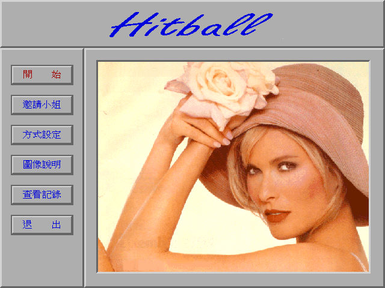
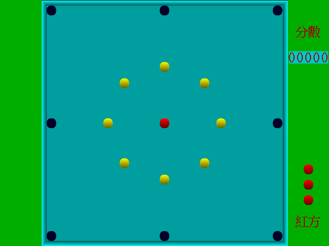

名稱：俄羅斯碰碰球／碰碰球 (Hitball，中文版)
簡介：先博1996年出品的類桌球遊戲，為附在「伍子胥」光碟裡的一款遊戲，台灣由捷鴻代
理發行 [待補]。


備註：本版為1997版
保護：無
備註：若無法安裝，直接拷貝光碟上的HITBALL目錄，再執行SETUP.EXE即可。
備註：DosBox必須設定sbtype=sb2，設定其他聲霸卡都會沒有聲音。
備註：電腦速度不可太快，否則可能會偵測不到音效卡而沒有聲音。
檔案：hitball-old.rar = 另一版本（可能是1996版）